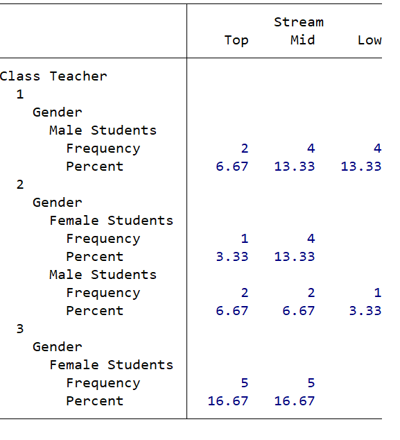
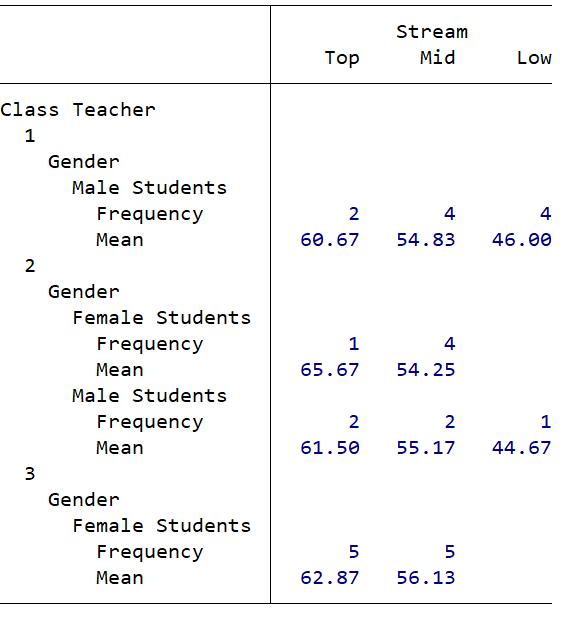

8 Exercise
Create a table showingl teacher in rows, stream in columns, with zero counts shown as 0 and totals for stream.
8.1 Adding statistics
The option statistic() allows us to add calculated results to a basic
table. For example:
table (teacher gender) (stream), nototals statistic(frequency) statistic(percent)
produces:

And we can add other statistical measures, such as the mean
table (teacher gender) (stream), nototals statistic(frequency) statistic(mean avxm) nformat(%6.2f mean)
The option nformat() allows you to change the numerical display format of the statistics, for example nformat(%9.0fc) shows as decimal precision of no places and a comma to delimit thousands.
The option sformat() allows you to add strings to the statistics defined in your table, so sformat("%s%%" percent) adds the percentage symbol to a calculated statistic percent and sformat("(mean)" mean) surrounds the mean statistic in brackets.
